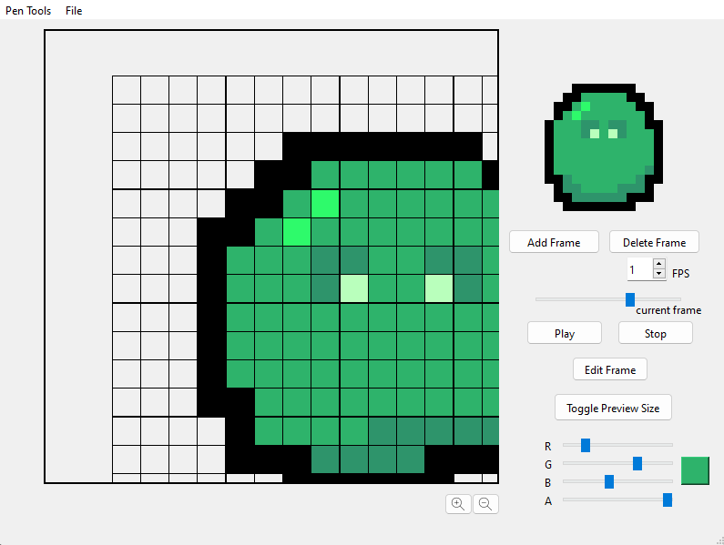

Let's build together!
I am a student studying Software Development at the University of Utah. I love exploring new things and expanding my knowledge of how computers work, but more than that I love working with people and making the best software possible with others. I am looking for an internship, because I believe that with technology we can change the world together.
This project was created in the Qt development enviroment with C++. It was built with 5 other people for a Software Development Course at the University of Utah. It is a game that teaches chemistry by allowing users to drop atoms in a vile and discover what new elements they can create.
We used an Agile methodology for this project where I played a key part of facilitating our structure during our daily meetings. I primarily worked on the game logic around detecting when the game is over, managing objects in our physics engine, Box2d, as well as integrating our tutorial into the game.
This project was created in the Qt development enviroment with C++. It was built with 5 other people for a Software Development Course at the University of Utah. This project gives a platform for artists to create low resolution animation for video games.
We used pair programming for our project, so I was part of the pair of people who implemented the zoom feature as well as part of the pair who implemented the ability for the user to save and load their file in JSON.
This project was created for a Web Development Class at the University of Utah. It is a learning management system where professors, teaching assistants, and students can complete, assign, and grade assignments for classes.
Parts of the project I worked on are